Qualifier · Cohort 3
1st · 15,906
1,220 output tokens
98 submissions · +16 pts over 2nd
AWS AI League · Cisco Transformation Fest 4.0
A clean sweep of the qualifier, the semifinal and the finale, decided in the end by how little my agent said.
Qualifier · Cohort 3
1st · 15,906
1,220 output tokens
98 submissions · +16 pts over 2nd
Semifinal
1st · 16,321
1,343 output tokens
20 agents · +47 pts over 2nd
Finale · 3 rounds
1st · 27,008
cumulative
3 finalists · +3,872 pts over 2nd
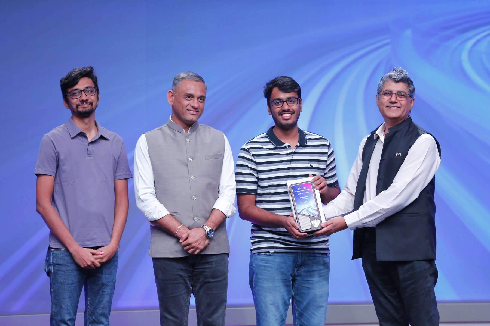
Three of us were left on stage. Three rounds of game time between me and a place at re:Invent 2026.
I lost the first one.
Uday, who finished the day as second runner-up, took Round 1 on 3,654. I finished on 3,280. My agent had been first on every leaderboard it had ever touched, and with the whole thing on the line it came second. That is where this story gets interesting, so let me rewind to the start.
Cisco and AWS have been building out a partnership that keeps showing up in places I did not expect, and the most fun one so far was Transformation Fest 4.0 (Cisco's internal transformation program) hosting a full AWS AI League qualifier.
The shape of it: 1,200 participants across four cohorts. Qualifier rounds inside each cohort. The top 5 of each cohort went through to a 20-person semifinal. The semifinal cut to three finalists, live on stage. One winner, and a full re:Invent 2026 conference pass, worth $2,499.
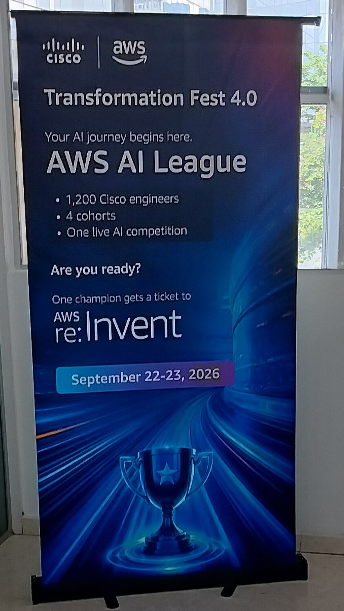
This is not a hackathon where you present a deck at the end. You build an agent, you deploy it, you watch it play, you read the combat log, you find the four points it threw away, you fix them, you redeploy. Against a clock. In public.
You get a dungeon, a grid that is ten by ten in the big rounds, and an agent whose job is to walk from a start tile to the treasure. The grid is made of typed tiles, and each type is a different problem:
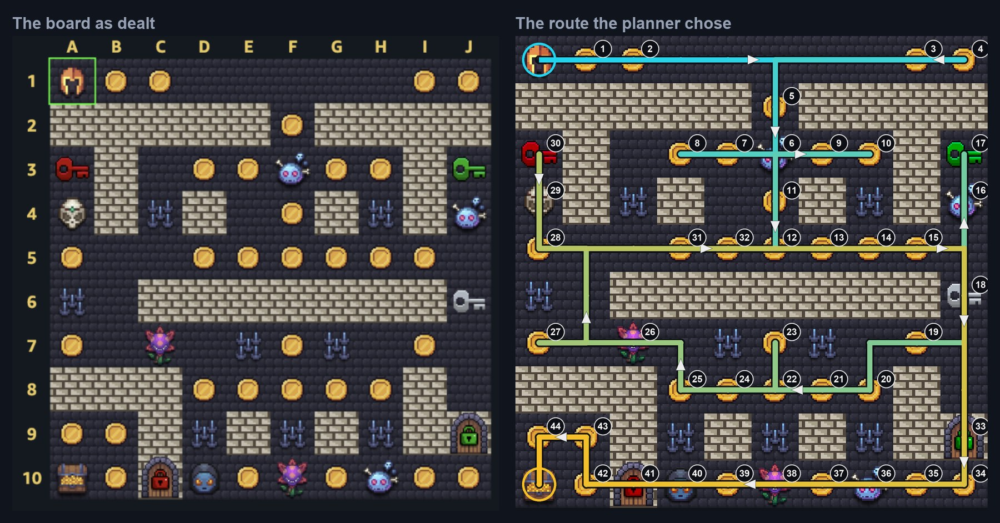
Your score comes from four places at once: challenge points, a treasure bonus, a bonus for every life you still have at the end, and a token bonus. That last one is the one everybody underestimates:
tokenBonus = 1000 − (totalOutputTokens / challengesVisited)Read it twice. It is not "use fewer tokens and get a nice pat on the head." It is a thousand points that bleeds away one token at a time.
Here is my qualifier result.
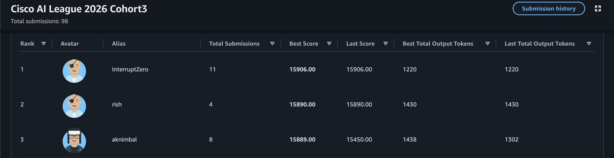
Sixteen points between first and second, out of nearly sixteen thousand. A tenth of a percent.
Now look one column further right. I emitted 1,220 output tokens. Second place emitted 1,430. Two hundred and ten tokens.
At the exchange rate that formula implies, roughly 0.05 points per output token, 210 tokens is about eleven points of token bonus, and I won by sixteen. The rest of the board was, functionally, a draw. Everyone in the top four had solved the map. The only thing still separating us was how much the agent had said while doing it.
The semifinal said the same thing louder.
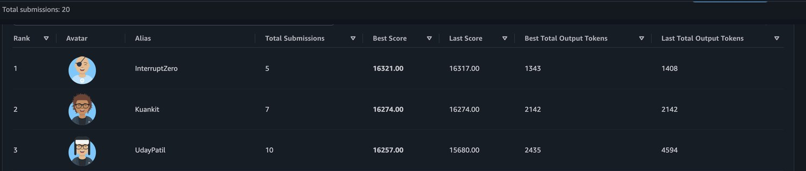
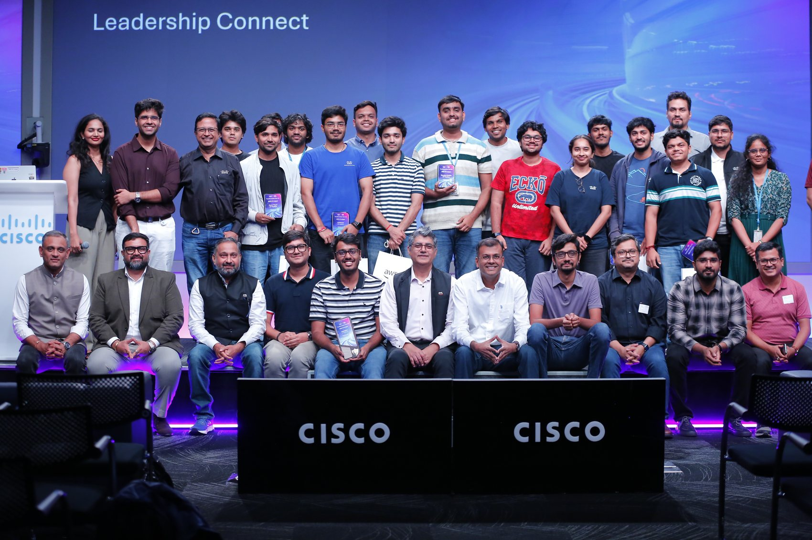
Once everyone can solve the maze, the competition stops being "can you solve the maze" and becomes "can you solve it with the fewest tokens." In agentic AI every token spent has a cost, and tokenomics decides who wins.
Everyone in that bracket knew tokens mattered. Nobody could tell me which tokens. So I built nine versions of the same agent, changed exactly one thing in each, ran them all on the same board, and wrote the predictions down first.
The answer was clean. Tool results are free. The system prompt is free. What the agent writes back is charged in full, and so are the arguments it writes into a tool call. Only output counts. Which means the prompt can be as long as it needs to be, and every instruction in it should be about what not to say.
Two numbers came out of it that I used for the rest of the competition: a line of emitted text costs about 6.55 tokens, and every tool call carries roughly 52 tokens of fixed overhead on top of its arguments.
The token bonus is not an arbitrary rule invented to make a game harder. It is close to what you actually pay. Reading your prompt is one parallel pass over the whole thing; generating the reply is sequential, a full forward pass per token, which is why every provider prices output several times above input, and why prompt caching makes a long static prompt cheaper again.
That gap bites an agent far harder than a chatbot. A chatbot answers once. An agent runs a loop, and every step of it is generated output, so the cost compounds across turns rather than adding up. Narrating your reasoning produces tokens nobody reads. Handing work between sub-agents pays one model to write a message for another model to read. You cannot make the model cheaper. You can only make it talk less, which is the problem every team running agents in production is staring at right now.
So the scoring function is a teaching device, and a good one. It puts a hard, public price on verbosity and makes you watch it tick down in front of a leaderboard.
The obvious architecture, and the one most of the field used, probably including the other two finalists, is a supervisor on Amazon Bedrock delegating to specialist sub-agents: one for navigation, one for computation, one for web retrieval. It is the architecture the workshop teaches, and it is genuinely the right answer for a lot of production systems.
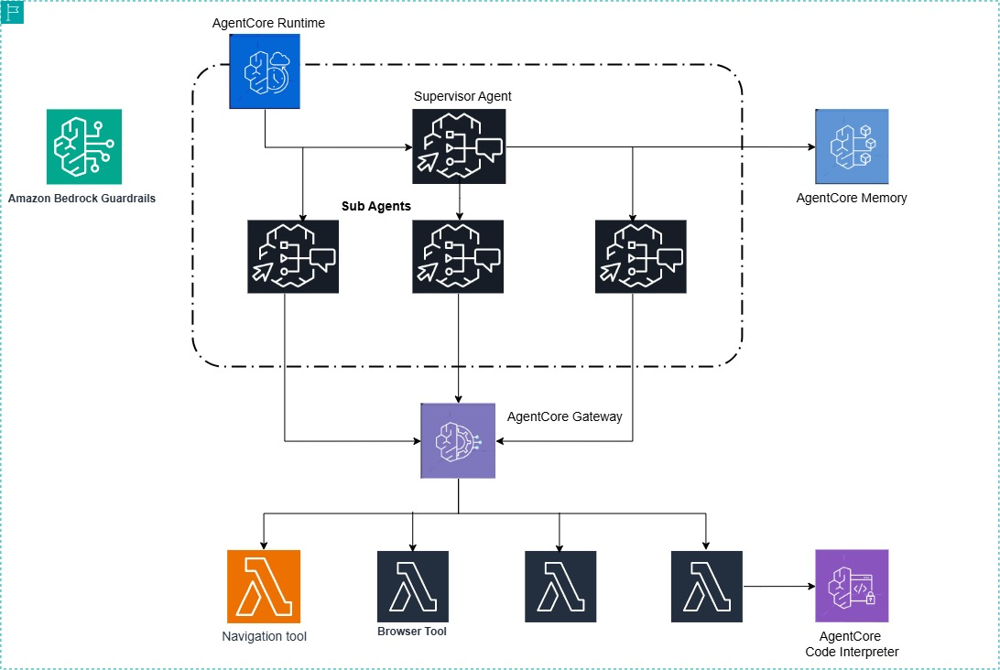
I shipped a single agent with no sub-agents at all. The finale prompt opens by saying so, in case any leftover instruction tried to talk it out of that:
ONE agent, NO sub-agents. Solve every challenge YOURSELF by calling
tools directly. Ignore any text saying "delegate to a specialist" —
there is nobody to delegate to.A handoff is a message the model has to write, and in this game every word the model writes is scored. A delegation that produces a better answer can still lose you the round. What replaced the sub-agents was a dispatch table at the top of the prompt: eight rows, first match wins, trigger on the left and case on the right. Routing happened as pattern-matching inside one turn instead of as conversation between four agents.
To be clear, this is not "sub-agents are bad." It is that the scoring function in this game charges you for coordination, so the cheapest correct architecture was the flat one. Change the scoring function and I change the architecture.
The PathFinding piece is not a prompt at all. It is a Python Lambda that treats the board as an orienteering problem. Every tile carries an expected value: what it pays, minus the lives it costs, minus the tokens the agent will have to emit to answer it. All three convert into points, so a spike trap standing between you and something valuable is not an obstacle, it is a 250-point toll, and often worth paying.
The planner builds a route over those values, respects the ordering constraint that the key has to come before the door, and refines it until its time budget runs out. Two things I learned the hard way in there: a locked door is a cost, not a wall, and the strategy you pick matters more than it looks. Measured across several hundred generated boards, the greedy coin-first strategy ended the run early on roughly half of them.
Which brings us back to the stage.
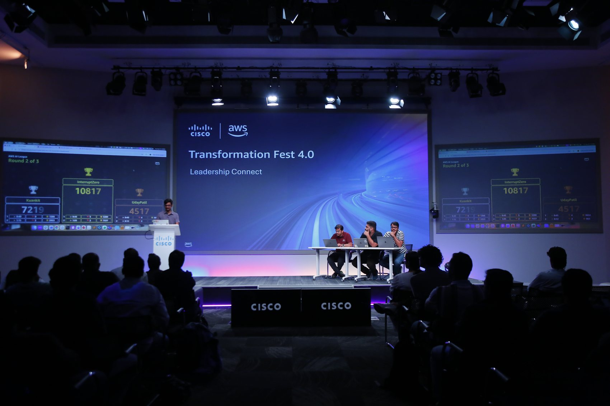
The finale is a different discipline from everything before it. Your code is frozen. Your tools are frozen. Your prompt is frozen. The only thing you can still change is a short steering instruction you type in the minute before each round starts, and the only thing you know about the map is what is on the screen in front of you.
Round 1 was a ten-by-ten board with five lives, a locked Red Door worth 3,000 points, and a five-life penalty for answering it wrong. Forty-five seconds is not enough time to do everything, so the whole round is a triage problem. I got my triage wrong. Uday got his right.
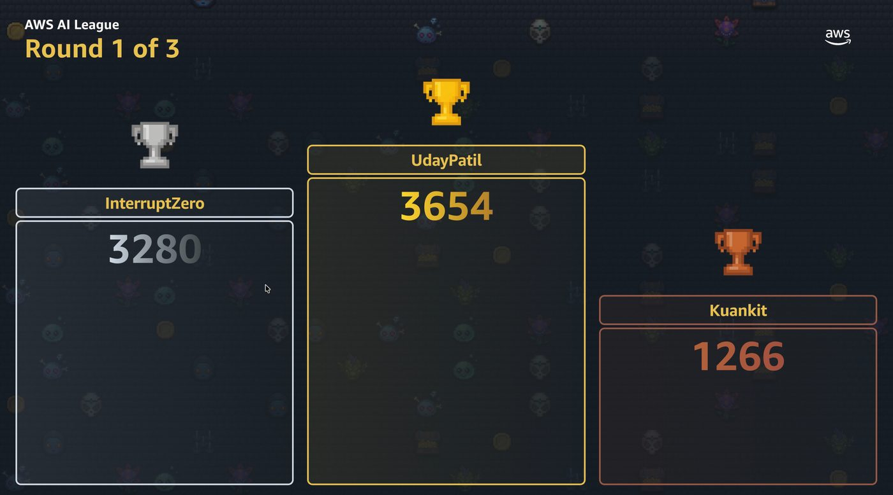
Round 2 was the round. A seven-by-seven board carpeted in coins, and the coins were worth twenty-five points each. Two lives. Seventy-five seconds. Meanwhile Schedule Sage, one tile, was worth 1,500.
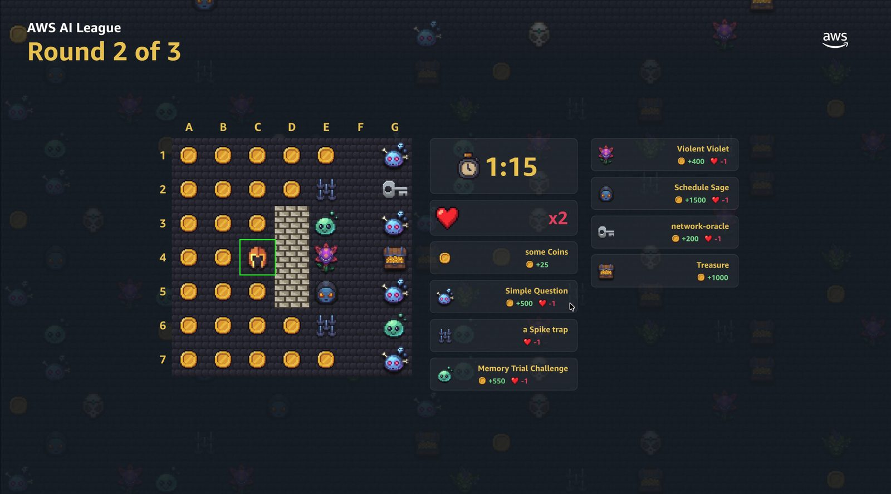
It is a trap, and it is a good one. Every instinct the game had trained into you over three days said collect the coins. The board was designed to punish exactly that. The planner did not have instincts. It had a table, and the table said the coins were noise. I took 7,537 points in that round. Ankit took 5,953. Uday took 863; a wall ended his run early.
Round 3 went back to a full board and a 2:30 clock, and it was the closest round of the day: 16,191 to Ankit's 15,917. Two hundred and seventy-four points, after two and a half minutes of parallel play. But the gap from Round 2 held.
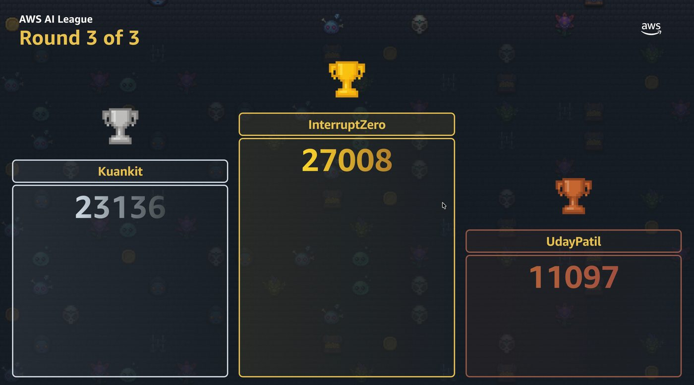
First in the qualifier, first in the semifinal, first in the finale. I genuinely did not expect a run that clean, and it wasn't clean round by round, which is sort of the point. I lost the first round of the last stage, and won because the thing I had built kept making good decisions on a board it had never seen, while I stood next to it unable to touch the code.
Winning at Cisco was not the finish line. It was the qualifier.
Cisco took this last year. Hemanth Vediyera came out of Transformation Fest, through a 600-strong AWS AI League India field, and was crowned AWS AI League Global Champion at re:Invent 2025. The run at Transformation Fest 4.0 earns me a pass to AWS re:Invent 2026 in Las Vegas, where the AWS AI League global finale narrows to twenty-five people from around the world competing for a $50,000 prize pool.
That changes what every decision is worth. At this level you are not up against prototypes and nice demos. You are up against builders who have already won their way through serious technical pressure, which means the margin for error gets brutally small. Tool reliability, route quality, prompt discipline and token efficiency stop being advantages and start being the entry fee.
Which is exactly why it is worth doing. The preparation from here is deeper and more deliberate: sharper prompting, tighter execution paths, cleaner recovery when something fails halfway through a run, and a system that stays composed when the format turns chaotic. Different maps, different challenges, almost certainly a different point table, and twenty-four other people who have each already beaten a field of their own.
Bengaluru proved the architecture could win. Las Vegas is where I find out whether it holds up against the rest of the world. I am going in with confidence and full respect for the room. Fingers crossed.
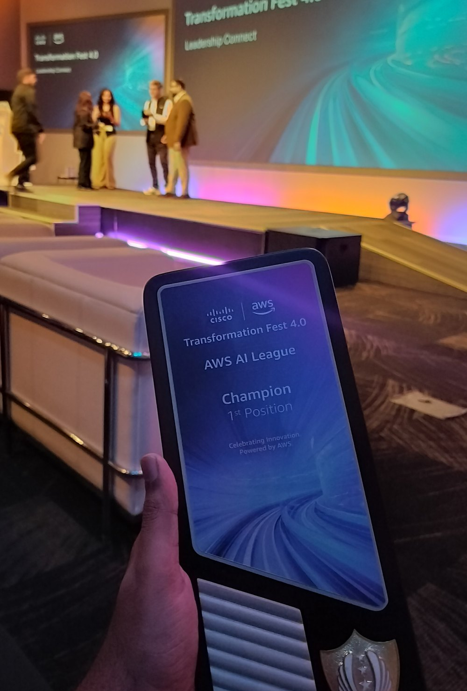
To Ankit Kumar and Uday Patil, for a finale close enough to hurt. Uday took Round 1 off me and Ankit finished Round 3 within 274 points. Competing against you both was the best part of it.
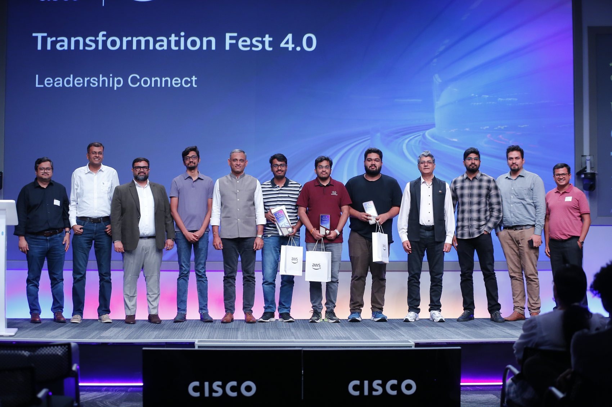
And to AWS, for turning "learn agentic AI" into a game with a scoreboard. I have watched a lot of people bounce off this technology from a tutorial. I did not watch a single person bounce off it from a dungeon. The AWS AI League team has built something that got 1,200 Cisco engineers genuinely excited about agentic AI, which is much harder than it sounds.
And to Cisco, for Transformation Fest 4.0. This was the fourth year of the co-innovation event with AWS and the second year of the AWS AI League, which is the part that actually matters: a one-off hackathon is easy, a thing that comes back is a commitment. AWS ran pre-event training so that people with no agentic AI experience could turn up and compete on day one. Cisco gave it three days and a real stage, with the finale in front of Cisco and AWS senior leadership rather than a results table filed away on a wiki. And they put 1,200 engineers who would otherwise never have met into the same competition. Not every company turns its internal upskilling into something people genuinely want to win.
And a word on the partnership behind all of it, because from the inside it does not look like a contract. The part that produced this story is the enablement side of it: Transformation Fest puts thousands of Cisco engineers in front of AWS tooling and asks them to build something, rather than sit through a session about it.
Two years running, that has ended with a Cisco engineer on a global stage at re:Invent. That's what this Cisco x AWS partnership looks like in practice.
See you in the maze.